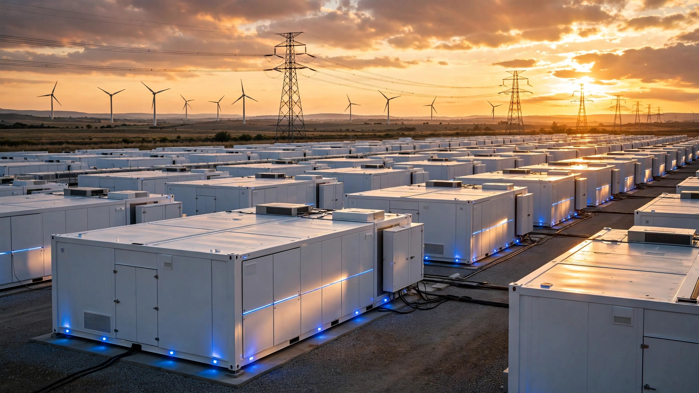

Everyone Quoted CATL's $35/kWh Sodium Battery Price. The Number That Actually Matters Is 3.6× Better Than Lithium.
CATL unveiled the first field-validated sodium-ion grid storage system on June 22. Its 15,000-cycle lifespan creates a lifecycle cost gap that dwarfs the cell-price advantage everyone keeps citing: $2.59 vs $9.40 per megawatt-hour per cycle.

Thirty-five dollars. That is the approximate cell cost, per kilowatt-hour, of the sodium-ion batteries CATL is shipping in its new TENER Sodium Energy Storage System, unveiled on June 22 at Intersolar Europe in Munich. Depending on which source you read, the number is $19, or $40, or $77. Coverage across the battery trade press has been arguing about this for months, and in a narrow sense, every cited figure is correct: they represent different points on the same cost curve at different scales and production stages. But all of them answer the wrong question.
For grid-scale energy storage, the number that determines whether a project gets built is not the cell price per kilowatt-hour. It is the cost per megawatt-hour stored over the system's entire operating life, a metric called the levelized cost of storage that incorporates not just what you paid for the cell but how many times you can cycle it before it dies and how much capacity it retains along the way. On that metric, CATL's sodium-ion technology doesn't beat lithium by the 33–40% everyone keeps citing. It beats it by 3.6 times.
Lifecycle Math the Industry Keeps Skipping
Grid storage batteries are not consumer electronics. Nobody buys a 1 GWh installation and throws it away after 4,000 cycles the way you might replace a phone battery after three years. These are 20- to 30-year capital assets. Project finance cares about one thing above all: the total cost of every megawatt-hour of energy that flows through the system over its contractual life. Engineers call this the levelized cost of storage, and it is determined by three inputs that multiply together in ways that make cell price almost irrelevant at the margins.
Nobody is running this calculation with CATL's published specs, which is remarkable given that the data to do it has been sitting in press releases for weeks. So here it is.
| Metric | CATL TENER (Na-ion) | Standard LFP (Li-ion) |
|---|---|---|
| Cell cost per kWh | ~$35 | ~$55 |
| Rated cycle life (80% retention) | 15,000 | 5,000–8,000 (midpoint: 6,500) |
| Average usable capacity over life | 90% | 90% |
| Total energy throughput per kWh installed | 13,500 kWh | 5,850 kWh |
| Cell cost per kWh stored | $2.59/MWh | $9.40/MWh |
| Lifecycle cost ratio | Na-ion is 3.6× cheaper per stored kWh | |
Straightforward arithmetic. A $35 cell that cycles 15,000 times delivers 13,500 kWh of energy throughput per kilowatt-hour of installed capacity (15,000 cycles × 0.90 average capacity factor as the cell degrades from 100% to 80%). Divide $35 by 13,500 and you get $0.00259 per kilowatt-hour, or $2.59 per megawatt-hour. A $55 LFP cell cycling 6,500 times (the midpoint of the industry's 5,000–8,000 range) delivers 5,850 kWh of throughput, and dividing $55 by 5,850 gives you $9.40 per megawatt-hour. Cell cost difference? Just 1.6×. Throughput difference? 2.3×. Multiply them together and the total lifecycle advantage balloons to 3.6×, which is the number that should be in every headline about sodium-ion batteries and is in approximately none of them.
Replacement Tax
It gets worse for lithium. CATL claims the TENER Sodium system will operate for 25 to 30 years at a 70% state-of-health standard. Standard LFP systems last 10 to 15 years before they need replacement, which means a 30-year grid project built on LFP needs at least one mid-life swap and possibly two, each requiring weeks of downtime, crane lifts, hazardous materials disposal, and reintegration testing that project developers prefer not to think about when they are signing the initial PPA. Even if LFP cell costs decline 30% by the replacement date, total cell capital expenditure for a 30-year LFP project runs to roughly $93 per kWh of original capacity ($55 upfront plus $38 at year 12). Sodium-ion spends $35 once and never looks back, a 2.7× capital advantage before you add the 15–20% surcharge that replacement labor, permitting, and disposal typically impose on top of the raw cell cost.
Untangling the Cost Confusion
Seemingly contradictory cost claims clutter every sodium-ion article. They are not evidence of confusion or dishonesty. They are snapshots of the same learning curve at different moments. When CATL first announced the Naxtra sodium-ion cell in 2023, Chinese media reported initial pilot production costs near 500 CNY per kilowatt-hour, roughly $77. CATL's stated target for mature second-generation production was 200–300 CNY ($31–$47). By early 2026, industry trackers reported realized commercial pricing in the $30–$40 range. And the $19 figure represents CATL's projection for high-volume production at scale, a price point the company says it can reach once manufacturing lines are fully utilized.
Better framing: "$77 in 2023, $35 in 2026, targeting $19 at full scale," which is exactly how lithium-ion costs behaved from 2010 to 2020 when cumulative production scaled from single-digit gigawatt-hours to hundreds and prices fell 89% along the way.
Manufacturing Quality: Already Answered
Skeptics have rightly asked whether sodium-ion manufacturing can match lithium's decades of optimization. Researchers at RWTH Aachen University answered that question in May, publishing a teardown of 120 commercial sodium-ion cells built by China's Hina Battery in Cell Reports Physical Science. Their analysis found manufacturing consistency "comparable to Tesla's lithium-ion batteries," including a tabless double-aluminum current collector architecture that reduces internal resistance and promotes even temperature distribution. "We were positively surprised by how uniform the cells are," said lead researcher Moritz Schütte. Performance under load was strong, though low-temperature charging remains a weakness requiring thermal management strategies in cold climates.
Counterargument at Full Strength
Sodium's lifecycle economics are compelling on paper. Here is why they might not matter.
Lithium carbonate prices are ferociously volatile. They peaked at roughly $27,700 per tonne in May 2026 but were as low as $8,000–$10,000 per tonne in early 2025, according to Skillings and Trading Economics data, and at those trough prices LFP cell costs can drop below $40/kWh, shrinking the cell-cost gap between the two chemistries to almost nothing.
Geography is the bigger problem. Sodium's supposed supply-chain diversification narrative is partially hollow: China controls 98% of announced sodium-ion cell manufacturing capacity and over 99% of cathode materials. Washington's $50 million LENS Consortium and European pilot efforts by firms like Stora Enso-Altris are years away from significant production. You are not diversifying away from geographic concentration by swapping a lithium mineral dependency for a Chinese factory dependency. A harder question for policymakers: can any non-Chinese nation build its own battery supply chain in either chemistry before the infrastructure buildout of the 2030s locks in today's sourcing patterns?
What This Analysis Does Not Prove
Several important caveats apply. First, the 15,000-cycle and 97% round-trip efficiency claims are CATL's own published specifications, and no independent third-party lab has validated full-cycle performance over the 25- to 30-year timeframes CATL projects because no sodium-ion grid installation has existed that long. Second, our calculation uses cell-level costs only, and balance-of-system costs (inverters, thermal management, housing, EPC labor) add roughly $60–80 per kilowatt-hour to both chemistries in roughly comparable proportions, though Na-ion's lower energy density (160 Wh/kg vs. LFP's 180–200 Wh/kg) does mean roughly 20–25% more physical volume per kilowatt-hour, increasing enclosure and land costs for the sprawling utility-scale installations where these batteries actually get deployed. Third, not all LFP is equal: premium systems from manufacturers like BYD claim 10,000+ cycles, which narrows the lifecycle gap from 3.6× to roughly 2.4×, a number that is still large by any procurement standard. Our 6,500-cycle midpoint represents the broad industry average, not the best available product.
What You Can Do With This
If you work in utility procurement, energy project finance, or grid planning, the immediate takeaway is to demand lifecycle throughput metrics in every bid, not just upfront cell price per kilowatt-hour. A battery that looks 40% cheaper on day one can look 260% cheaper over a 30-year concession, or 40% more expensive if its cycle life is short enough to require replacements that the bid conveniently leaves to a future budget cycle. Ask every vendor for three numbers: cell cost, cycle life at 80% retention, and total throughput per kilowatt-hour installed. Divide the first by the third, and you have the metric that actually determines your project economics. For individual investors watching the energy storage sector, the CATL-HyperStrong 60 GWh deal signed in April signals that at least one major integrator has done this math and committed real capital to the conclusion. If sodium-ion reaches CATL's projected $19/kWh cell cost while maintaining 15,000-cycle durability, the cell-level lifecycle cost drops to $1.41 per megawatt-hour, which would make grid storage essentially free compared to the cost of the energy flowing through it.
The Bottom Line
CATL's TENER Sodium system is the first commercially validated entry in what will become a multi-vendor, multi-chemistry grid storage market, and it works well enough that a German university found its Chinese-made cells match Tesla's manufacturing standards in a 120-cell teardown. What actually matters is not the cell price per kilowatt-hour, which is what every headline quotes, but the interaction between cell price and cycle life, a compound metric that almost nobody computes and that changes the picture completely when you do. At $35 per kilowatt-hour and 15,000 cycles, sodium-ion stores energy for $2.59 per megawatt-hour at the cell level. Lithium iron phosphate, at $55 per kilowatt-hour and 6,500 cycles, stores it for $9.40. That 3.6× gap is the number that will determine whether sodium-ion captures a meaningful share of the $380 billion global energy storage market projected for 2035. Run the math yourself.